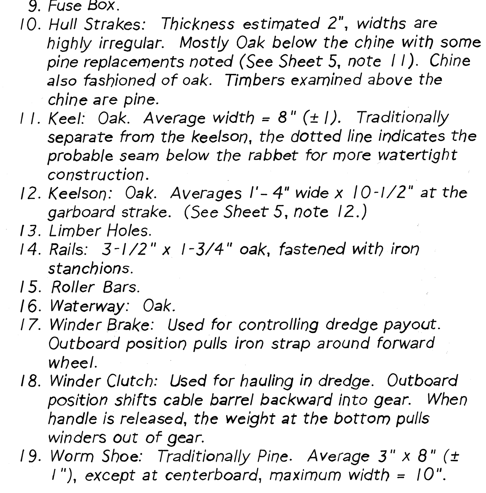

Original scan pixels: [10357, 5819, 13474, 8980]; source SHA-256: 8e1e32bd0608a3214c250e2ebe4090f44ca68c3d9cf1ebfc27482f0b40d4e683.
Native lossless view · Raw OCR · Word coordinates/confidence · Manifest

Fuse box.
Hull strakes estimated 2 inches thick; highly irregular widths. Mostly oak below chine with pine replacements, oak chine; examined above-chine members pine.
Keel: oak, width 8 inches plus/minus 1 inch; traditionally separate from keelson, probable seam shown below rabbet.
Keelson: oak, average 1 foot 4 inches wide x 10-1/2 inches at garboard; see sheet 5 note 12.
Limber holes.
Rails: 3-1/2 x 1-3/4-inch oak on iron stanchions.
Roller bars.
Waterway: oak.
Winder brake controls dredge payout; outboard position pulls iron strap around forward wheel.
Winder clutch hauls dredge; outboard position shifts cable barrel backward into gear. Releasing handle lets bottom weight pull winders out of gear.
Worm shoe traditionally pine, average 3 x 8 inches plus/minus 1 inch; maximum width at centerboard 10 inches.
9. Fuse BOX, 10. Hull Strakes: Thickness estimated 2", widths are highly irregular. Mostly Oak below the chine with some pine replacements noted (See Sheet 5, note | 1). Chine also fashioned of oak. Timbers examined above the chine are pine. | | 1. Keel: Oak. Average width = 8" (+/). Traditionally separate from the keelson, the dotted line indicates the probable seam below the rabbet for more watertight construction. | | | 12. Keelson: Oak. Averages |'- 4" wide x 10-!72" at the garboard strake. (See Sheet 5, note /2.) 13. Limber Holes. . 14. Rails: 3-1/2" x 1-3/4" oak, fastened with iron © stanchions. | 15. Roller Bars. 16. Waterway: Oak. |7. Winder Brake: Used for controlling dredge payout. Outboard position pulls iron strap around forward wheel. | 18. Winder Clutch: Used for hauling in dredge. Outboard position shifts cable barrel backward into gear. When handle is released, the weight at the bottom pulls winders out of gear. 19. Worm Shoe: Traditionally Pine. Average 3" x 8" (+ |"), except at centerboard, maximum width = 10".